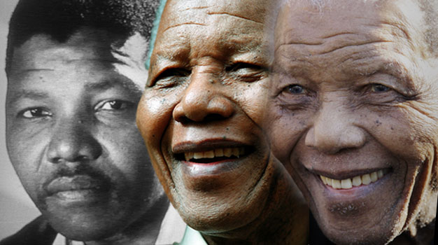

Biografia :
Nelson Mandela nato il 18 Luglio 1918 nella famiglia reale dei Thembu, una tribù di etnia Xhosa che viveva in una fertile valle del Capo Orientale (Sudafrica), in un villaggio di capanne bianche. Sua madre lo partorì lungo la riva di un fiume. Il suo nome in lingua Xhosa, Rolihlahla, ha un significato profetico: “attaccabrighe”.
Sarà chiamato Nelson solo quando inizierà a frequentare il collegio coloniale britannico di Healdtown. Un nome affibbiato dall’insegnante, che sceglieva nomi inglesi a caso per i ragazzini sudafricani, al posto degli impronunciabili appellativi tribali. Forse il nome di Mandela è ispirato all’ammiraglio britannico Lord Nelson.
Gli anni ’30 sono stati un periodo difficile per il Sudafrica, con deportazioni, leggi restrittive per gli spostamenti interni e altri provvedimenti di segregazione. Mandela frequentava l’Università di Fort Hare quando emerse la sua forza di volontà e la sua indignazione per l’ingiustizia: fu espulso dall’università nel 1940 per aver guidato una manifestazione studentesca insieme a Oliver Tambo. Era già chiaro che nessuno era in grado di dire a questo giovane come doveva comportarsi.
Tornando al suo villaggio, quando scoprì che il suo capotribù aveva deciso che era giunto per lui il tempo di sposare una ragazza del suo rango e che era già stata pagata la dote, Nelson Mandela scappò a Johannesburg.
A 22 anni trovò lavoro come guardiano alle Miniere della Corona di Johannesburg, con fischietto e manganello. In contrasto con le sue nobili aspettative, gli uffici della miniera erano baracche di lamiera arrugginita in un’area brutta e spoglia, con lo stridulo rumore dei montacarichi, delle trivelle, e i remoti boati della dinamite. Il contrasto rispetto alla sua tranquilla vita di campagna deve essere stato scioccante, e Mandela verificò rapidamente la realtà della miseria opprimente e dello sfruttamento disumano dei suoi compagni lavoratori.
La politica cominciò a giocare un ruolo molto significativo nella sua vita. Mossi dall’umiliazione e dalle sofferenze della loro gente, e offesi dalle leggi sempre più ingiuste e intollerabili, nel 1944, Nelson Mandela, Walter Sisulu e Oliver Tambo insieme ad altri costituirono la Lega Giovanile dell’ANC (African National Congress), e in pochi anni Mandela ne divenne presidente.
Con ambizione e determinazione, completò i suoi studi di legge all’Università del Witwatersrand, e con Tambo avviò il primo studio legale per i neri. Così cominciò la pericolosa e appassionata vita totalmente dedicata alla lotta contro i mali dell’apartheid.
Mandela si dedicò anima e corpo a condurre una campagna non violenta di disobbedienza civile, aiutando ad organizzare scioperi, marce di protesta e manifestazioni, incoraggiando la gente a rifiutarsi di obbedire alle leggi discriminatorie.
La rabbia della gente cresceva e si scatenava la repressione. Mandela fu arrestato per la prima volta nel 1952. Fu assolto, ma seguirono successive vessazioni, arresti e detenzioni, culminati nell’infame Processo di Treason del 1958. Nello stesso anno, Mandela sposò Winnie.
Ben quattro anni dopo l’inizio del processo, dette la sua appassionata e articolata testimonianza; fu giudicato non colpevole e venne scarcerato.
Fino ad allora, aveva cercato di mantenere la pratica legalitaria, ma dopo il processo, di fronte alle crescenti repressioni e la messa a bando dell’ANC, la lotta armata diventò l’unica soluzione. Fu così che Mandela sacrificò la sua vita privata e la sua pratica legale e si dedicò all’insurrezione armata. Nel 1962 Mandela fu arrestato di nuovo per alto tradimento e fu condannato a cinque anni di carcere. Li scontò sapendo di non essere colpevole di alcun crimine: era divenuto un criminale per la legge, non per ciò che aveva fatto ma per quello in cui credeva. Mentre scontava la condanna, fu di nuovo accusato di sabotaggio al processo di Rivonia. La sua eloquente e appassionante arringa, durata 4 ore, finì con le famose parole: “Ho nutrito l’ideale di una società libera e democratica, in cui tutte le persone vivono insieme in armonia… Questo è un ideale per cui vivo e che spero di realizzare. Ma se è necessario, è un’ideale per il quale sono pronto a morire”.
Nel 1964 Nelson Mandela fu giudicato colpevole di sabotaggio e alto tradimento e fu condannato con i suoi compagni alla punizione suprema: ergastolo a Robben Island, quell’isolotto piatto in mezzo alle onde dell’oceano Atlantico (di fronte a Città del Capo, ndt), che rappresenta in maniera più completa di qualsiasi altro pezzo di terra sudafricana l’aspetto detestabile degli ultimi tre secoli di storia del Sudafrica. Là, in una cupa giornata nuvolosa, sferzato dal freddo vento invernale, Mandela si trovò di fronte due severe guardie armate, che gli ordinarono di spogliarsi e di rimanere nudo in piedi fuori dalla vecchia prigione di pietra, e poi gli fecero indossare la semplice uniforme kaki del carcere di massima sicurezza.
I precetti dell’apartheid si estendevano anche all’abbigliamento: al fine di ricordare ai prigionieri neri che erano dei “ragazzini”, venivano costretti ad indossare pantaloni corti, una maglietta, una casacca di tela e scarpe senza calzini. I compagni di prigionia indiani avevano invece pantaloni lunghi e calzini.
All’età di 46 anni, Nelson Mandela entrò per la prima volta nella piccola, angusta cella nella Sezione B, che sarebbe stata la sua casa per molti anni a venire. C’erano una piccola finestra con le sbarre e una porta spessa di legno coperta da una inferriata di metallo. La cella era così piccola che il prigioniero poteva percorrerne la lunghezza in tre passi, e quando si coricava non aveva spazio per distendersi completamente.
Robben Island era senza dubbio il luogo più duro e spietato del sistema penale dell’apartheid sudafricano. Ai prigionieri era permesso di scrivere e ricevere solo una lettera e una visita ogni sei mesi: un isolamento in un vero e proprio inferno privato. Per riempire le giornate, erano sottoposti a lavori forzati: spaccare con grandi mazze carichi di pietre per trasformarle in ghiaia, e poi lavorare come schiavi nel calore della vicina cava di calcare, bianco accecante sotto il sole. Non era consentito parlare e chi fischiettava era punito. La vita era tremendamente dura. Cominciò così una nuova e diversa battaglia, quella per migliorare le condizioni di prigionia, terribilmente ingiuste e disumane. Prima di tutto, bisognava occuparsi della questione dei pantaloni: a nessuno piace essere chiamato “pantaloni corti”, tanto meno a Nelson Mandela. Dopo mesi di discussioni e proteste ufficiali, un giorno un paio di vecchi pantaloni kaki fu bruscamente gettato sul pavimento della sua cella, ma egli si rifiutò di indossarli fino a che i suoi compagni di prigione neri non avessero ottenuto la stessa concessione.
Ci furono anche altre battaglie: per l’uguaglianza nei pasti, per il diritto di indossare occhiali da sole nelle cave di calcare, e per avere nelle celle sgabelli a tre gambe, per far sedere i prigionieri esausti quando studiavano a tarda sera sui corsi per corrispondenza. Mentre otteneva tutte queste piccole vittorie, Nelson Mandela non dimenticava la battaglia più importante, e - nonostante che gli anni passassero inesorabilmente - il mondo non si dimenticava di lui.
A metà degli anni ’80 la crescente condanna internazionale portò a colloqui segreti tra il governo e Mandela e finalmente, l’11 Febbraio 1990, egli fu incondizionatamente liberato. Nessuno lo vedeva in fotografia da 27 anni; questo uomo alto, magro e distinto si trovava improvvisamente di fronte alla grande folla venuta a salutarlo. Si può immaginare lo shock di Mandela, immerso in una arena pubblica di questo tipo dopo anni trascorsi virtualmente in silenzio.
Durante la sua carcerazione, sua madre e suo fratello erano morti, i suoi 5 bambini erano diventati adulti, sua moglie era un’estranea e, ovviamente, la tecnologia aveva fatto passi da gigante. Ironia della sorte, questi anni orribili in prigione sono stati un arricchimento: Nelson Mandela è la prova vivente del trionfo dell’animo umano contro avversità e privazioni insopportabili.
Nonostante 27 anni lunghi e bui di privazioni e di prigionia repressiva, pur avendo assistito a casi estremi di crudeltà, dolore, sofferenza e disperazione, in qualche modo questo uomo meraviglioso è uscito nobilitato, indomito e ostinato, rafforzato nella sua volontà di combattere sempre di più contro l’apartheid.
Alzò la sua mano destra verso la folla, e si udì un boato che lo riempì di gioia indescrivibile. Quando finalmente uscì dai cancelli del carcere, Mandela sentì che, all’età di 71 anni, la sua vita stava cominciando di nuovo.
Era davvero come se egli avesse passato questi anni di prigione conservando con cura le sue energie, che gli sarebbero servite per sorridere nei turbini di flash dei fotografi, per fare nuove strategie con l’ANC, per negoziare con i politici intransigenti, per socializzare con le personalità pubbliche, e per dare a ciascuno dei suoi numerosi sostenitori un pezzettino di Nelson Mandela. Così tornava nel trambusto della politica mondiale.
Nel 1990 l’ANC ha sospeso la lotta armata dopo circa 30 anni, e l’anno successivo Mandela ne è diventato Presidente, e si è unito al governo e agli altri partiti politici nei negoziati per il futuro del Sudafrica postapartheid. Nel 1992 Nelson Mandela si è separato dalla moglie Winnie, dopo alcune divergenze politiche e molte speculazioni giornalistiche. Il perdono diventò la sua arma principale. Cercò la riconciliazione con il Presidente F.W. De Klerk, e insieme a lui nel 1993 ricevette il Premio Nobel per la Pace per il comune impegno nella promozione di un Sudafrica democratico.
Un governo provvisorio di unità nazionale, una costituzione democratica, una frenetica campagna per le elezioni presidenziali, la vittoria dell’ANC alle prime elezioni interraziali del paese e, nel Maggio 1994, l’elezione di Nelson Mandela a Presidente. In modo sorprendente, egli dette un ricevimento per le vedove dei politici che lo avevano imprigionato e pranzò con il magistrato che sosteneva la sua impiccagione dopo che era diventato Presidente. Mandela si preoccupava della costruzione della Nazione e faceva ogni sforzo possibile per fugare le paure delle minoranze in Sudafrica. Era l’inizio del suo nuovo ruolo di negoziatore e intermediario per la pace e la riconciliazione.
Lungi dal cercare vendetta per quegli anni lunghi e solitari, il suo desiderio di libertà per il suo popolo è divenuto desiderio di libertà per tutti, neri e bianchi. Grazie a questo impegno, la nuova costituzione sudafricana bandisce la discriminazione nei confronti di tutte le minoranze. Il 18 Luglio 1998, il giorno del suo ottantesimo compleanno, Nelson Mandela ha di nuovo preso tutti di sorpresa sposando la sua attuale moglie, Graca Machel, vedova del defunto Presidente del Mozambico Samora Machel.
Nella sua vita, Mandela ha avuto tre mogli, che hanno dovuto competere con la politica, la prigione e la pubblica piazza per ottenere l’attenzione del marito.
Alla fine dei conti, ora Mandela ha 30 nipoti e 6 pronipoti.
Già nel 1994, all’epoca delle prime elezioni libere in Sudafrica, Mandela era dell’idea che non fosse opportuno fare il Presidente all’età di 76 anni. Dovette essere convinto, ma fin dall’inizio ha voluto mettere in chiaro che avrebbe portato a termine un solo mandato.
Nelson Mandela si è ritirato ufficialmente dalla vita pubblica nel 1999, ma non ha mai interrotto la sua misericordiosa azione umanitaria, portando la sua instancabile battaglia per la pace e la comprensione umana oltre i confini del Sudafrica. Mandela muore Il 5 Dicembre 2013 nella sua casa di Johannesburg.